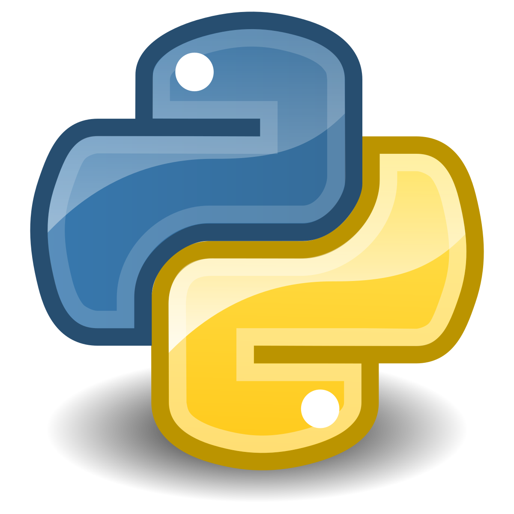
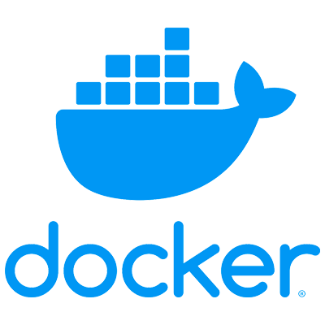

Louis Daviet
Jeune diplômé en Data, spécialisé dans la conception de pipelines, l’intégration d’APIs et l’automatisation des workflows. J’accompagne les entreprises dans l’exploitation et la valorisation de leurs données, de la collecte à la visualisation.
Je suis à la recherche d’une nouvelle opportunité pour contribuer à des projets data stimulants, en mettant à profit mon autonomie, mon sens de l’organisation et mon esprit d’équipe.
📄 Télécharger mon CV ✉️ Me contacterCompétences clés
Packages R : tidyverse, car, shiny, mapSF, ggplot2, dplyr

Bibliothèques Python : pandas, matplotlib, requests, BS4
SGBD et data warehouse : Oracle, PostgreSQL, Snowflake, BigQuery

Outils Docker : Docker, DockerHub
Outils GitHub : Git, GitHub Actions
Outils Looker Studio : Création de rapports interactifs, Data Studio
Compétences Excel : Formules avancées, Tableaux croisés dynamiques, macros VBA
Expériences
MPC - Consultant Data
Oct. 2024 - Aujourd'hui
- Infrastructure Data : Mise en place d'une solution de construction et de gestion de pipelines de données pour l'intégration et la transformation des données.
- Containerisation & DevOps : Création et gestion de conteneurs Docker pour le déploiement des applications et services sur des environnements isolés.
- Data Visualization : Analyse avancée, réalisation de tableaux de bord interactifs et personnalisés avec Looker Studio pour le suivi des indicateurs clés de performance.
- Collecte de données via API : Utilisation et intégration d'APIs pour l'extraction et l'automatisation de la collecte de données.
- Optimisation des bases de données & SQL : Optimisation des bases de données et des requêtes SQL pour améliorer les performances et l'efficacité des traitements de données.
- CI/CD : Mise en place de pipelines CI/CD pour automatiser le déploiement, les tests et la gestion des versions des applications et des services.
Projets
Migration d'infrastructure de données - MageAI
🎯 Objectif: Remplacer la solution d'intégration de données par une alternative plus simple et flexible, permettant une gestion plus intuitive des pipelines de données.
📝 Méthode:
- Analyse des besoins et sélection de MageAI comme outil d'orchestration.
- Configuration de MageAI en local via Docker, incluant le développement des pipelines et l'analyse de la gestion des secrets.
- Mise en place du développement et de l'intégration continue avec versionning.
- Déploiement sur un serveur distant, incluant la création d'une image Docker sur Docker Hub et son déploiement sur le serveur.
- Assurance de la persistance des données (pipelines, triggers, secrets) via des volumes persistants pour PostgreSQL et MageAI.
- Tests de la solution et optimisation des performances.
💻 Technologies: Python, MageAI, Docker, PostgreSQL, API, Github
🏆 Résultats: Mise en place d'une solution simple, automatisée, permettant d'importer des données en temps réel.
Dashboard - Mission Freelance
🎯 Objectif: Développer un tableau de bord interactif permettant à un freelance d'obtenir une vue d'ensemble en temps réel des offres de missions disponibles.
📝 Méthode:
- Analyse des attentes des freelances, identification des informations essentielles à afficher sur le dashboard
- Développement de scripts de Web Scraping et utilisation d'API publique, afin de centraliser toutes les offres dans un format structuré pour traitement.
- Les offres collectées sont ensuite stockées dans Snowflake puis exportation des données vers Looker Studio pour permettre la création de visualisations dynamiques et interactives adaptées aux besoins du freelance.
- Création du tableau de bord interactif sur Looker Studio, intégration des filtres et mise en place de graphiques pour une visualisation claire des tendances du marché des freelances en temps réel.
💻 Technologies: Python, Snowflake, SQL, Web Scrapping, API
🏆 Résultats: Création d'un tableau de bord interactif et intuitif, offrant une vision claire et immédiate des offres disponibles pour les freelances.
Analyseur VOD Twitch – Solution d'analyse de contenu par IA
🎯 Objectif: Automatiser l’extraction de moments clés et l’analyse de sentiment sur des rediffusions Twitch afin d'analyser la perception d'un live.
📝 Méthode:
- Collecte automatisée de la VOD et des messages via l’API Twitch
- Retranscription des flux vidéo avec Whisper
- Traitement du langage naturel (NLP) et prompt engineering pour analyser les commentaires et détecter les temps forts.
- Ajout d'un outil de génération de courtes vidéos à partir des moments forts identifés
- Construction d’un pipeline capable de traiter de larges volumes (heures de vidéos, milliers de messages).
- Développement d’une interface interactive avec Streamlit pour visualiser les résultats.
💻 Technologies: Python, Streamlit, API Twitch, Whisper, LLM, NLP, Analyse de sentiment
🏆 Résultats: Génération de synthèses contextuelles, d’analyses sentimentales et de moments forts exploitables à partir de VOD complètes.
Mémoire - Déterminants géographiques des défaillances d'entreprises
🎯 Objectif : Établir un modèle statistique permettant de prédire et comprendre les défaillances d'entreprises en analysant leurs déterminants géographiques.
📝 Méthode :
- Définition du sujet, élaboration de la méthode et identification des bases de données nécessaires.
- Choix du découpage géographique pour l'étude et sélection des méthodes statistiques appropriées.
- Recherche et collecte des différentes bases de données (Siren, Zone d'emploi, etc.) en fonction des choix faits.
- Mise en place d'un POC sur une région pour tester la validité de la méthode avant de l'étendre à l'ensemble du territoire.
- Application du modèle sur l'ensemble du territoire, analyse descriptive et cartographie des résultats.
- Développement d'un modèle statistique et d'une analyse de corrélation spatiale pour répondre à la problématique des défaillances d'entreprises.
💻 Technologies : R et ses packages (Car, tidiverse, mapSF)
🏆 Résultats : Une vision globale des différents déterminants géographiques pouvant expliquer les défaillances d'entreprises.
Études
M2 PISE - Université Paris Cité
Oct. 2024 - Aujourd'hui
-
Bases de données :
- Modélisation de bases de données (MCD, MLD, MPD) pour la conception de systèmes de gestion de données efficaces.
- SQL / NoSQL : Maîtrise des langages de requête et des bases de données relationnelles et non relationnelles.
- Utilisation de SGBD : ORACLE, PostGres accompagnés de DBeaver
-
Développement :
- HTML, CSS, PHP : Création de sites web dynamiques et interactifs, adaptés aux besoins spécifiques des utilisateurs.
- C, JAVA : Apprentissage des paradigmes de programmation procédurale et orientée objet, fondamentaux pour le développement de logiciels.
- Python : Utilisation des bibliothèques requests, pandas, BS4 pour le traitement et l'analyse de données.
- R : Utilisation des packages Tidyverse, Shiny, ggplot2, SF pour la manipulation, la visualisation et l'analyse spatiale de données.
-
Mémoire : Les déterminants géographiques des défaillances d'entreprises
- Réalisation d'un mémoire de recherche approfondi à l'aide de R, explorant les facteurs géographiques influençant les défaillances d'entreprises.
- Analyse prédictive : Développement de modèles pour anticiper les risques de défaillance en fonction de variables géographiques.
- Cartographie et corrélation spatiale : Utilisation de techniques de cartographie et d'analyse spatiale pour identifier les tendances et les corrélations.